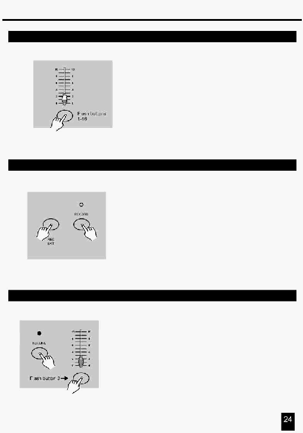

3. Робота з інтерфейсом MIDI
3.2 Установка вихідного каналу MIDI OUT
2. Натисніть кнопку Flash з номером 1-16 для визначення
номера каналу MIDI OUT (1-16), індикатор відповідного
каналу засвітиться, указуючи на те, що канал MIDI OUT
установлений.
3.3 Вихід з режиму установок MIDI
Натисніть й утримуйте натиснутою кнопку Record.
Натисніть кнопку Rec Exit, при цьому втримуючи
натиснутою кнопку Record для виходу з установок каналу
MIDI.
3.4 Прийом даних файлу MIDI
Натисніть кнопку Flash
3 три рази, при цьому, утримуючи
натиснутою кнопку Record, на цифровому дисплеї прочитайте
"IN" , що вказує на те, що пульт готовий прийняти дані файлу
MIDI.
Натисніть цю
кнопку три рази